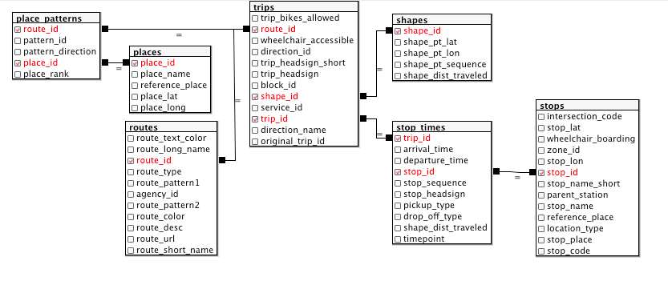

SDMTS Part 1 Static Data Preview
In this series I will be looking at the data provided by the San Diego Metropolitan Transit System. This section will be a quick look at the static data, the data that provides the schedule and route information.
Important Links
The notebooks that supplement the series can be found here
All of the SDMTS data is available on their developer page, although a key will have to be requested for access to their real time feed.
Introduction
The SDMTS bus system has always held a special place in my heart. Since I didn’t have a car throughout my UCSD career, the buses provided the life line I needed to get away from campus any time I needed.
In this part, we will take a quick look through what sort of information is available. The R notebook that supplements this post can be found in the Part_1 folder of the repo.
The static data set follows the GTFS spec established by google. A complete and thorough reference can be found on their website.
This notebook will simply explore the most interesting sections of the data, as well as the part most relevant to the later parts of the series. Let’s get started!
The Files
The static information comes in the form of fifteen files:
AgencyCalendar DatesCalendarFare AttributesFare RulesFeed InfoFrequencies- Place Patterns
- Places
- Routes
- Shapes
- Stop Times
- Stops
Transfers- Trips
The first seven files and transfers will be excluded from this analysis.All of the files come in the form of a csv. I will briefly summarize the data found in each file, as will be relevant to our use case. The exact information found in each file can be explored in the notebook.
Places
This file provides a list of locations (think street corners and prominent landmarks) by name, coordinates (latitude and longitude). Each place is assigned a 6 character id, which is used in the next file…
Place Patterns
The data here is subset by a route and direction. Each subset consists of an ordered list of places (provided by id) visited by each route-direction.
Routes
Here we find the association between route number and it’s long name (two locations that describe its range). In addition we can also find here if the route travels in more than one directions.
Shapes
In order to properly map the trips the bus takes, we need to account for the roads that will be taken, as well as their curvature. In this file, we find subsets defined by a shape id which consists of three numbers separated by underscores. The first number is the route associated with the shape id, while the next two describe the direction and variation of the specific trip that it describes. Each subset consists of a sequence of coordinates, as well as the distance traveled by the bus once it has reached that point in the trip.
Stops
This file provides a list of bus stops, by name and coordinates, and assigns each stop an id, which is used in…
Stop Times
We are first introduced to the concept of trip ids here. Each trip id uniquely defines a combination of:
- route
- direction
- departure time
The rest of the file contains the arrival and departure time at each stop, per trip.
Trips
Here, each trip id is associated with all of the characteristics defined above.
Visualization of file relations
The script to set up the postgresql database can be found in the repo.

Conclusion
I hope this was a clear summary of the kind of data we will be working with. In the part 2, we will dive into the data a bit, to get a more concrete idea of the data at hand.